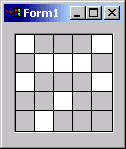

Создание визуальных компонентов для библиотеки KOL.
Целю данной статьи, является показать на примере написание визуального KOL компонента, а также создание для него зеркального компонента МСК (зеркальные компонеты МСК являются вспомогательными и существуют только на этапе проектирования в Delphi IDE). В статье рассмотрены "подводные камни", с которыми может столкнуться разработчик компонентов KOL. Также рассмотрен новый метод визуализации МСК компонентов, основанный на том, что в МСК компоненте создается соответствующий ему компонент KOL, который отображает себя сам на этапе проектирования в Delphi IDE. Таким образом, отпадает необходимость делать отрисовку МСК компонентов вручную! Этот метод визуализации доступен в МСК, начиная с версии 1.65.
Исходные коды компонента, рассмотренного в статье, можно загрузить отсюда.
1. Создание визуального компонента KOL.
При создании собственных визуальных компонентов в KOL рекомендуется наследовать их от объекта TControl. При этом Вы получаете уже готовую реализацию многих свойств, методов и событий, которыми должен обладать Ваш компонент. Например, любому визуальному компоненту необходимы методы/свойства для изменения размера, позиции, цвета, шрифта, и т.д. Также необходимы и события от клавиатуры, мыши, и т.д. Все это и многое другое уже реализовано в TControl. Вы можете либо создать компонент с собственной отрисовкой и обработкой ввода пользователя, либо использовать любой из стандартных компонентов как основу.
Так как в KOL используется старая объектная модель Borland Object Pascal, где вместо классов (class) используются объекты (object), и, по умолчанию, в объекте TControl нет виртуальных конструкторов (экземпляры TControl создаются с помощью обычных функций NewXXX), то полноценного наследования не получается. Как следствие, в объекте-наследнике нельзя использовать виртуальные методы базового объекта и нельзя добавлять новые поля данных. Можно только добавлять новые методы и свойства, чтение и запись которых производится с помощью методов. Для решения проблемы хранения данных компонента в TControl существуют два поля CustomData: pointer и CutomObj: TObj. Первому - можно присвоить указатель на динамически выделенный блок памяти, содержащий данные и события Вашего компонента, второму - указатель на экземпляр объекта (наследника TObj), служащему тем же целям. При уничтожении компонента объекты, на которые ссылаются поля CustomData и CutomObj, уничтожаются автоматически. Если в компоненте используются поля типа строка (string), то перед уничтожением компонента необходимо присвоить им всем пустую строку ( например: Prop1 := ''; ). Поэтому для хранения данных компонента рекомендуется сделать вспомогательный объект на базе TObj и в его деструкторе делать завершающие действия: освобождать используемую память и присваивать строковым полям пустую строку.
Для создания компонента в KOL принято использовать функцию-конструктор с именем New<имя компонента>, которая возвращает указатель на новый экземпляр компонента. Внутри функции-конструктора сначала вызывается функция-конструктор базового объекта, например NewPanel, которая, собственно, и создает объект. Если компонент не строится на базе стандартного компонента KOL, то вызываются функция _NewControl или _NewCommonControl (используется только при создании компонентов, представляющих собой стандартные элементы управления Windows). Далее следует инициализация, необходимая для работы компонента.
Для того чтобы компонент мог обрабатывать сообщения, используются функции-обработчики сообщений, которые регистрируются с помощью метода AttachProc.
В качестве примера рассмотрим компонент TCheckMesh (см. рисунок). Этот компонент представляет собой сетку с некоторым количеством ячеек по горизонтали и по вертикали. При нажатии мышкой на ячейку она становится "отмеченной" (изменяется ее цвет). Компонент унаследован от стандартной панели KOL, следовательно, все свойства, методы и события панели будут в нем доступны.
Итак, объявляем наш компонент:
type
PCheckMesh = ^TCheckMesh;
TCheckMesh = object(TControl)
private
procedure PaintMesh( Sender: PControl; DC: HDC );
procedure MouseDown(pt: TPoint);
function GetLineColor: TColor;
procedure SetLineColor(const Value: TColor);
function GetXCells: integer;
function GetYCells: integer;
function GetState(X, Y: integer): boolean;
procedure SetState(X, Y: integer; const Value: boolean);
function GetCheckColor: TColor;
procedure SetCheckColor(const Value: TColor);
function GetOnCellClick: TOnCellClickEvent;
procedure SetOnCellClick(const Value: TOnCellClickEvent);
public
// Цвет линий сетки
property LineColor: TColor read GetLineColor write SetLineColor;
// Цвет заливки отмеченной ячейки
property CheckColor: TColor read GetCheckColor write SetCheckColor;
// Количество ячеек по горизонтали
property XCells: integer read GetXCells;
// Количество ячеек по вертикали
property YCells: integer read GetYCells;
// Массив состояний ячеек: True - ячейка отмечена, False - нет
property State[X, Y: integer]: boolean read GetState write SetState; default;
// Событие OnCellClick вызывается при щелчке мышью на ячейке
property OnCellClick: TOnCellClickEvent read GetOnCellClick write SetOnCellClick;
end;
Обратите внимание на то, что внутри
объекта компонента нет полей данных и назначение
и чтение всех свойств реализовано в виде методов.
Для хранения данных компонента используется
следующий вспомогательный объект:
type
PCheckMeshData = ^TCheckMeshData;
TCheckMeshData = object(TObj)
private
fXCells: integer;
fYCells: integer;
fStates: PBoolArray;
fLineColor: TColor;
fCheckColor: TColor;
fOnCellClick: TOnCellClickEvent;
public
destructor Destroy; virtual;
end;
destructor TCheckMeshData.Destroy;
begin
FreeMem(fStates);
inherited;
end;
Теперь создаем функцию-конструктор компонента, параметрами которой являются: родительский компонент, стиль рамки и количество ячеек по горизонтали и по вертикали.
function NewCheckMesh(AParent: PControl; EdgeStyle: TEdgeStyle;
XCells, YCells: integer): PCheckMesh;
var
data: PCheckMeshData;
begin
// Вызываем конструктор панели NewPanel
Result := PCheckMesh(NewPanel(AParent, EdgeStyle));
// Создаем экземпляр объекта TCheckMeshData, необходимый для хранения
// данных и событий компонента TCheckMesh
New(data, Create);
// Присваиваем его полю CustomObj нашего компонента
Result.CustomObj := data;
// Устанавливаем начальные значения свойств
data.fXCells := XCells;
data.fYCells := YCells;
data.fLineColor := clBtnText;
data.fCheckColor := clWindow;
// Выделяем память для хранения состояния ячеек
GetMem(data.fStates, XCells*YCells*SizeOf(boolean));
FillChar(data.fStates^, XCells*YCells*SizeOf(boolean), 0);
// Регистрируем свой обработчик сообщений
Result.AttachProc(@CheckMeshWndProc);
// Устанавливаем свой обработчик отрисовки
Result.OnPaint := Result.PaintMesh;
end;
Чтобы создать необходимый Вашему компоненту обработчик сообщений нужно знать о том, какие бывают сообщения в Windows. В компоненте TCheckMesh обрабатываются нажатие мыши и изменение размера. Так выглядит обработчик сообщений компонента:
function CheckMeshWndProc( Sender: PControl; var Msg: TMsg;
var Rslt: Integer ): Boolean;
begin
Result := False;
case Msg.message of
// Сообщение WM_SIZE приходит при изменении размера компонента
WM_SIZE:
Sender.Invalidate;
// Сообщение WM_LBUTTONDOWN приходит при нажатии левой кнопки мышью
// внутри компонента
WM_LBUTTONDOWN:
begin
// Вызываем обработчик нажатия мыши нашего компонента
PCheckMesh(Sender).MouseDown(SmallPointToPoint(TSmallPoint(Msg.LParam)));
end;
end;
end;
Так выглядят функции записи и чтения
свойств и событий компонента:
function TCheckMesh.GetCheckColor: TColor;
begin
Result := PCheckMeshData(CustomObj).fCheckColor;
end;
function TCheckMesh.GetLineColor: TColor;
begin
Result := PCheckMeshData(CustomObj).fLineColor;
end;
function TCheckMesh.GetOnCellClick: TOnCellClickEvent;
begin
Result := PCheckMeshData(CustomObj).fOnCellClick;
end;
function TCheckMesh.GetState(X, Y: integer): boolean;
begin
if X >= XCells then
X := XCells - 1;
if Y >= YCells then
Y := YCells - 1;
Result := PCheckMeshData(CustomObj).fStates^[(Y*XCells + X)*SizeOf(boolean)];
end;
function TCheckMesh.GetXCells: integer;
begin
Result := PCheckMeshData(CustomObj).fXCells;
end;
function TCheckMesh.GetYCells: integer;
begin
Result := PCheckMeshData(CustomObj).fYCells;
end;
procedure TCheckMesh.SetCheckColor(const Value: TColor);
begin
PCheckMeshData(CustomObj).fCheckColor := Value;
Invalidate;
end;
procedure TCheckMesh.SetLineColor(const Value: TColor);
begin
PCheckMeshData(CustomObj).fLineColor := Value;
Invalidate;
end;
procedure TCheckMesh.SetOnCellClick(const Value: TOnCellClickEvent);
begin
PCheckMeshData(CustomObj).fOnCellClick := Value;
end;
procedure TCheckMesh.SetState(X, Y: integer; const Value: boolean);
begin
if X >= XCells then
X := XCells - 1;
if Y >= YCells then
Y := YCells - 1;
PCheckMeshData(CustomObj).fStates^[(Y*XCells + X)*SizeOf(boolean)] := Value;
Invalidate;
end;
И, наконец, обработчики нажатия мыши и
рисования компонента:
// Вызывается из обработчика сообщений при нажатии левой кнопки мыши
procedure TCheckMesh.MouseDown(pt: TPoint);
var
x, y: integer;
begin
x := pt.x div (ClientWidth div PCheckMeshData(CustomObj).fXCells);
y := pt.y div (ClientHeight div PCheckMeshData(CustomObj).fYCells);
State[x, y] := not State[x, y];
if Assigned(PCheckMeshData(CustomObj).fOnCellClick) then
PCheckMeshData(CustomObj).fOnCellClick(@Self, x, y);
end;
// Здесь мы рисуем наш компонент
procedure TCheckMesh.PaintMesh( Sender: PControl; DC: HDC );
var
x, y, cx, cy, cw, ch: integer;
R: TRect;
begin
Canvas.Handle := DC;
cw := ClientWidth;
ch := ClientHeight;
cx := cw div PCheckMeshData(CustomObj).fXCells;
cy := ch div PCheckMeshData(CustomObj).fYCells;
Canvas.Brush.BrushStyle := bsSolid;
for y := 0 to PCheckMeshData(CustomObj).fYCells - 1 do begin
R.Top := y*cy;
if y <> PCheckMeshData(CustomObj).fYCells - 1 then
R.Bottom := (y + 1)*cy
else
R.Bottom := ch;
for x := 0 to PCheckMeshData(CustomObj).fXCells - 1 do begin
if PCheckMeshData(CustomObj).fStates^[(Y*XCells + X)*SizeOf(boolean)] then
Canvas.Brush.Color := PCheckMeshData(CustomObj).fCheckColor
else
Canvas.Brush.Color := Color;
R.Left := x*cx;
if x <> PCheckMeshData(CustomObj).fXCells - 1 then
R.Right := (x + 1)*cx
else
R.Right := cw;
Canvas.FillRect(R);
end;
end;
Canvas.Pen.Color := PCheckMeshData(CustomObj).fLineColor;
for y := 1 to PCheckMeshData(CustomObj).fYCells - 1 do begin
Canvas.MoveTo(0, y*cy);
Canvas.LineTo(cw, y*cy);
end;
for x := 1 to PCheckMeshData(CustomObj).fXCells - 1 do begin
Canvas.MoveTo(x*cx, 0);
Canvas.LineTo(x*cx, ch);
end;
Canvas.Brush.BrushStyle := bsClear;
Canvas.Rectangle(0, 0, cw, ch);
Canvas.Brush.BrushStyle := bsSolid;
end;
2. Создание зеркального компонента МСК.
Теперь пришло время сделать компонент доступным для визуального проектирования в Delphi IDE. Для этого необходимо создать, так называемый, зеркальный МСК компонент. Он представляет собой VCL компонент, который будет представлять Ваш компонент на этапе проектирования. Также зеркальный компонент ответственен за генерацию кода создания и инициализации KOL компонента, зеркалом которого он является.
Раньше перед разработчиками компонентов стояла проблема визуализации МСК компонентов в дизайнере, т. к. приходилось всю отрисовку внешнего вида компонента делать самостоятельно. Обычно мало кто этим себя утруждал, и, как следствие, большое количество компонентов, в том числе и стандартных, в дизайнере выглядели как рамки.
Теперь появилась возможность использовать компоненты KOL для визуализации соответствующих им МСК компонентов в дизайнере. Для этого нужно переопределить виртуальный метод CreateKOLControl МСК компонента и в нем создать экземпляр соответствующего KOL компонента. Сразу после этого KOL компонент начнет отображать себя сам. Остается только при изменении свойств МСК компонента, влияющих на его отображение, изменять соответствующие свойства KOL компонента. KOL компонент доступен из МСК компонента через свойство FKOLCtrl: PControl.
Если Ваш компонент представляет собой owner draw combo box или owner draw list box, то в зеркальном компоненте Вам необходимо переопределить метод SetParent и в нем вызвать RecreateWnd.
procedure TKOLMyCtrl.SetParent( Value: TWinControl );
begin
inherited;
if Assigned(Value) then
RecreateWnd;
end;
Если этого не сделать, то, из-за ограничения Windows, не будут отрисовываться owner draw элементы вашего компонента.
Если в Вашем зеркальном компоненте вызывается RecreateWnd, то вам необходимо переопределить метод KOLControlRecreated. Он вызывается, если компонент был заново создан вызовом RecreateWnd. В нем нужно заново устанавить ВСЕ свойства реального компонента KOL (FKOLCtrl), влияющие на его отображение.
Рассмотрим реализацию зеркального компонента TKOLCheckMesh. Код зеркального компонента МСК не должен располагаться в том же модуле, что и код KOL компонента. В нашем случае KOL компонент находится в модуле kolCheckMesh.pas, а зеркальный МСК компонент - в модуле mckCheckMesh.pas.
Итак, объявление зеркального компонента TKOLCheckMesh:
type
// Наследуем наш зеркальный компонент от зеркала стандартной панели KOL
TKOLCheckMesh = class(TKOLPanel)
private
fOnCellClick: TOnCellClickEvent;
fLineColor: TColor;
fCheckColor: TColor;
fXCells: integer;
fYCells: integer;
// Обработчики присваивания соответствующим событиям
procedure SetCheckColor(const Value: TColor);
procedure SetLineColor(const Value: TColor);
procedure SetOnCellClick(const Value: TOnCellClickEvent);
procedure SetXCells(const Value: integer);
procedure SetYCells(const Value: integer);
protected
// Переопределяем TypeName и возвращаем название нашего объекта
function TypeName: String; override;
// Переопределяем AdditionalUnits и возвращаем название модуля,
// в котором реализован объект TCheckMesh
function AdditionalUnits: String; override;
// Переопределяем SetupParams и возвращаем параметры для конструктора
// объекта NewCheckMesh()
function SetupParams(const AName, AParent: String): String; override;
// Переопределяем SetupConstruct и добавляем код создания объекта
// в список SL
procedure SetupConstruct(SL: TStringList; const AName, AParent,
Prefix: String); override;
// Переопределяем SetupConstruct и добавляем код назначения свойств
// объекта в список SL
procedure SetupFirst(SL: TStringList; const AName, AParent,
Prefix: String); override;
// Переопределяем AssignEvents и добавляем код назначения событий
// объекта в список SL
procedure AssignEvents(SL: TStringList; const AName: String); override;
// Переопределяем BestEventName и возвращаем название события, которое
// будет создаваться по двойному щелчку мышью на компоненте в дизайнере
function BestEventName: String; override;
// Переопределяем CreateKOLControl, в котором создаем экземпляр
// реального компонента KOL, который будет отображаться в дизайнере
procedure CreateKOLControl(Recreating: boolean); override;
// Переопределяем KOLControlRecreated, который вызывается если
// компонент был заново создан вызовом RecreateWnd. Здесь нужно
// заново устанавить ВСЕ свойства реального компонента KOL, влияющие
// на его отображение. RecreateWnd вызывается только в том случае
// если какое-то свойство компонента KOL можно задать только в
// его конструкторе.
procedure KOLControlRecreated; override;
public
constructor Create( AOwner: TComponent ); override;
published
// Эти свойства будут видны в дизайнере.
// Они соответствуют свойствам KOL компонента.
property LineColor: TColor read fLineColor write SetLineColor;
property CheckColor: TColor read fCheckColor write SetCheckColor;
property XCells: integer read fXCells write SetXCells;
property YCells: integer read fYCells write SetYCells;
property OnCellClick: TOnCellClickEvent read fOnCellClick write SetOnCellClick;
end;
А теперь - реализация методов зеркального компонента:
constructor TKOLCheckMesh.Create(AOwner: TComponent);
begin
// В конструкторе устанавливаем значения свойств по умолчанию
// ПЕРЕД вызовом конструктора предка
fLineColor := clBtnText;
fCheckColor := clWindow;
fXCells := 4;
fYCells := 4;
inherited;
end;
function TKOLCheckMesh.TypeName: String;
begin
// возвращаем название нашего объекта без приставок Т или Р
Result := 'CheckMesh';
end;
function TKOLCheckMesh.AdditionalUnits: String;
begin
// возвращаем название модуля, в котором реализован объект TCheckMesh
Result := ', CheckMesh';
end;
procedure TKOLCheckMesh.AssignEvents(SL: TStringList; const AName: String);
begin
inherited;
DoAssignEvents(SL, AName, ['OnCellClick'], [@OnCellClick]);
end;
function TKOLCheckMesh.BestEventName: String;
begin
// возвращаем название события, которое будет создаваться по двойному
// щелчку мышью на компоненте в дизайнере
Result := 'OnCellClick';
end;
procedure TKOLCheckMesh.CreateKOLControl(Recreating: boolean);
begin
// создаем реальный KOL контрол и даем ему родителем KOLParentCtrl
// НЕ НУЖНО вызывать inherited!
FKOLCtrl := PControl(NewCheckMesh(KOLParentCtrl, edgeStyle, XCells, YCells));
end;
procedure TKOLCheckMesh.KOLControlRecreated;
begin
inherited;
// заново устанавливаем ВСЕ свойства нашего реального KOL контрола,
// влияющие на его отображение
PCheckMesh(FKOLCtrl).LineColor := LineColor;
PCheckMesh(FKOLCtrl).CheckColor := CheckColor;
end;
procedure TKOLCheckMesh.SetCheckColor(const Value: TColor);
begin
if fCheckColor = Value then exit;
fCheckColor := Value;
// Нужно вызывать метод Change при изменении свойства
Change;
end;
procedure TKOLCheckMesh.SetLineColor(const Value: TColor);
begin
if fLineColor = Value then exit;
fLineColor := Value;
// Изменяем соответствующее свойство FKOLCtrl
if Assigned(FKOLCtrl) then
PCheckMesh(FKOLCtrl).LineColor := Value;
// Нужно вызывать метод Change при изменении свойства
Change;
end;
procedure TKOLCheckMesh.SetOnCellClick(const Value: TOnCellClickEvent);
begin
if @fOnCellClick = @Value then exit;
fOnCellClick := Value;
// Нужно вызывать метод Change при изменении свойства
Change;
end;
function TKOLCheckMesh.SetupParams(const AName, AParent: String): String;
begin
// Сначала вызываем метод предка (TKOLPanel)
Result := inherited SetupParams(AName, AParent);
// В Result получаем что-то вроде 'Result.Form, esNone'
// Теперь к этому добавляем параметры нашего компонента.
Result := Format('%s, %d, %d', [Result, XCells, YCells]);
// В итоге получаем что-то вроде 'Result.Form, esNone, 4, 4'
end;
// В методе SetupConstruct в список SL добавляется код создания объекта
procedure TKOLCheckMesh.SetupConstruct(SL: TStringList; const AName, AParent,
Prefix: String);
begin
// Здесь мы добавляем в список SL код создания компонента KOL.
// Метод GenerateTransparentInits вернет строку, содержащую код
// "прозрачной" инициализации объекта, например такой:
// .SetPosition( 8, 8 ).SetSize( 150, 150 )
// Нам необходимо сделать приведение к PCheckMesh, т. к. "прозрачные" методы
// SetPosition и SetSize возвращают результат типа PControl
SL.Add( Format('%s%s := PCheckMesh( NewCheckMesh(%s)%s );',
[ Prefix, AName, SetupParams( AName, AParent ),
GenerateTransparentInits ] ) );
// В результате в список добавится строка вида:
// Result.CheckMesh1 := PCheckMesh( NewCheckMesh( Result.Form, esNone, 4, 4 ).
// SetPosition( 8, 8 ).SetSize( 150, 150 ) );
end;
procedure TKOLCheckMesh.SetupFirst(SL: TStringList; const AName, AParent,
Prefix: String);
begin
inherited;
// Здесь мы добавляем в спсок SL код установки свойств объекта
// в том случае, если их значения отличаются от начальных
if LineColor <> clBtnText then
SL.Add(Format('%s%s.LineColor := %s;', [Prefix, AName, Color2Str(LineColor)]));
if CheckColor <> clWindow then
SL.Add(Format('%s%s.CheckColor := %s;', [Prefix, AName, Color2Str(CheckColor)]));
end;
procedure TKOLCheckMesh.SetXCells(const Value: integer);
begin
if fXCells = Value then exit;
fXCells := Value;
// Вызываем RecreateWnd, т.к. нет другого способы изменить это свойство
if Assigned(FKOLCtrl) then
RecreateWnd;
// Нужно вызывать метод Change при изменении свойства
Change;
end;
procedure TKOLCheckMesh.SetYCells(const Value: integer);
begin
if fYCells = Value then exit;
fYCells := Value;
// Вызываем RecreateWnd, т.к. нет другого способа изменить это свойство
if Assigned(FKOLCtrl) then
RecreateWnd;
// Нужно вызывать метод Change при изменении свойства
Change;
end;
3 . Использование созданного компонента в проекте
KOL/MCK.
После создания зеркального компонента МСК необходимо подключить его к Delphi IDE. Для этого нужно создать новый пакет (package), добавить в него зеркальный компонент и зарегистрировать пакет в среде Delphi. После этого компонент станет доступен для визуального проектирования.
Естественно, компонент можно использовать и в чистом KOL проекте (проекте, который не использует визуальное проектирование MCK).
Пример использования компонента CheckMesh в проекте KOL:
program Test;
uses kol, kolCheckMesh;
var
frm: PControl;
Mesh: PCheckMesh;
begin
frm:=NewForm(nil, 'Test').SetSize(200, 200);
Mesh:=NewCheckMesh(frm, esNone, 4, 4);
with Mesh^ do begin
SetSize(100, 100);
CheckColor:=clRed;
LineColor:=clBlack;
end;
Run(frm);
end.(с) 2003-2004 Юрий Сидоров